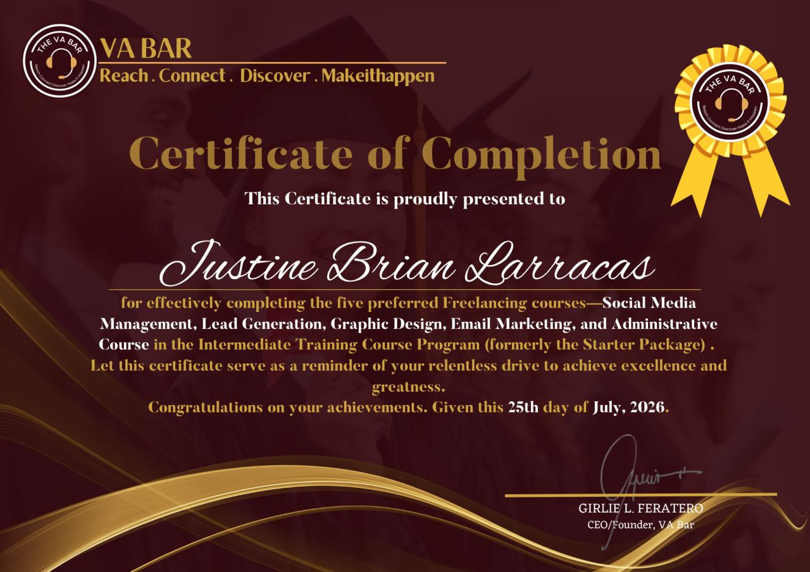
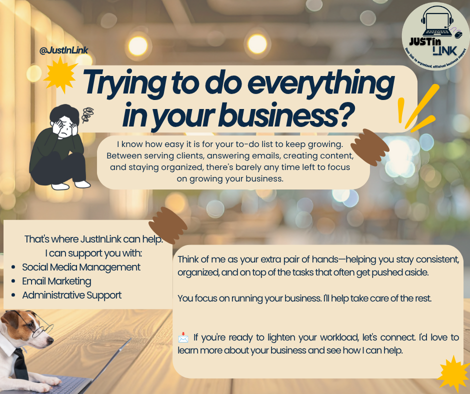
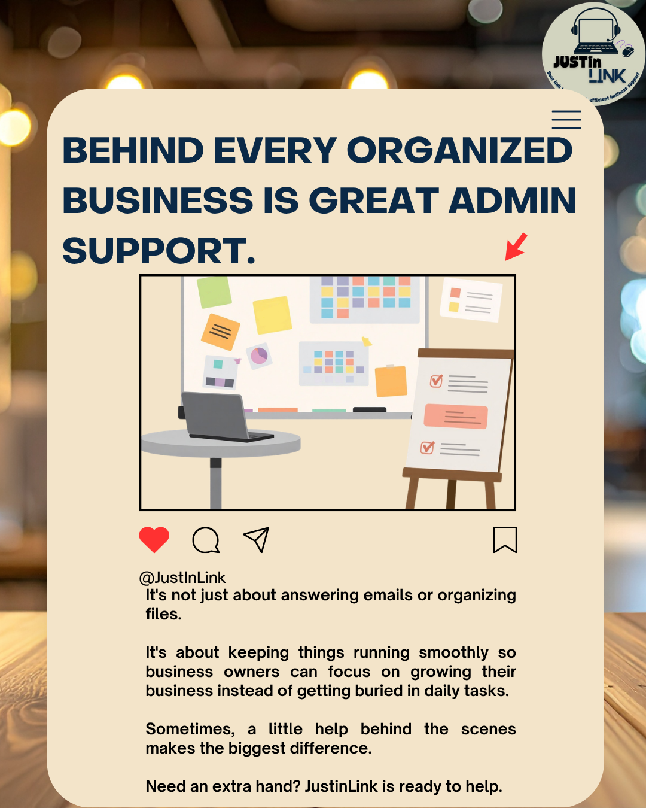

Administrative assistance, online research, file organization, data organization, and basic business support.
VIRTUAL ASSISTANT • PHILIPPINES
Helping busy business owners stay organized & productive.
Administrative • Social Media • Email Marketing
I'm Justine Brian Larracas, a reliable Virtual Assistant ready to help with the day-to-day tasks that keep your business moving — so you can spend more time focusing on growth.

JustInLinkReliable support behind your business.
02 • ABOUT ME
More time for your business.
I'm a beginner Virtual Assistant with training in administrative support, data entry, social media management, and content creation.
I completed VA training with The VA Bar, where I gained practical knowledge in admin tasks, email marketing, social media management, and lead generation.
I also have experience in data entry and worked in a printing shop where I handled typing, scanning, compiling files, and printing.
I'm hardworking, adaptable, and a fast learner who is always willing to learn and grow. My goal is simple: make your workload lighter and help keep your business organized.
See how I can help →03 • WHAT I CAN TAKE OFF YOUR PLATE
Support that keeps business moving.
From everyday admin to social media tasks, I can help you stay consistent, organized, and on top of the work that often gets pushed aside.
Document preparation, file organization, scanning, compiling files, and basic Microsoft Office tasks.
Data encoding, typing, copy & paste, spreadsheet organization, and document handling.
Content planning, post creation, carousels, single-image posts, captions, and engagement support.
Email marketing support, lead research, organized prospect information, and content assistance.
04 • WHY JUSTINLINK
A dependable extra pair of hands.
Organized
I keep tasks, files, and information structured so important details are easier to find and manage.
Reliable
I understand the importance of consistency, clear communication, and getting assigned work done carefully.
Detail-Oriented
I pay attention to the small things that can make everyday business tasks smoother.
Ready to Learn
I'm adaptable, hardworking, and willing to learn new tools and workflows as your business needs change.
05 • WHAT I BRING
Skills & tools
A growing toolkit for organized and consistent virtual support.
Administrative SupportData Entry & EncodingFile OrganizationSocial Media ContentContent CreationEmail MarketingLead GenerationOnline ResearchAttention to DetailCanvaMailchimpGoogle DocsGoogle SheetsMicrosoft WordMicrosoft ExcelMeta Business Suite
06 • TRAINING & CERTIFICATION
The VA Bar
Training and certification that support my growing Virtual Assistant skill set.

I completed Virtual Assistant training with The VA Bar and gained hands-on practice in administrative tasks, data management, social media management, content creation, email marketing, lead generation, basic client support, and digital tools for VA work.
07 • A LOOK AT MY WORK
Social media content & professional portfolio
Here are a few examples of the type of content and social media support I can provide.
Carousel


Single-image post

Single-image post

08 • HOW I WORK
Simple, clear, and organized.
Tell Me What You Need
We discuss your business and the tasks you'd like support with.
Plan the Workflow
We organize priorities, deadlines, and responsibilities.
I Handle the Tasks
You get back time to focus on the parts of your business that matter most.
Stay Updated
Clear communication keeps you informed about progress and priorities.
09 • TOOLS I USE
Ready to work with the tools you already use.
I can support workflows across common productivity, communication, design, and marketing platforms.
CanvaGoogle WorkspaceGoogle DocsGoogle SheetsMicrosoft WordMicrosoft ExcelMailchimpMeta Business SuiteZoomCalendly
10 • WHAT YOU CAN EXPECT
Professional support with a human touch.
Clear Communication
You'll know what I'm working on and what needs your attention.
Careful Work
I take time to review details and keep tasks organized before delivery.
Adaptability
I'm willing to learn your preferred tools, processes, and way of working.
Confidentiality
Your business information, files, and client details deserve professional care.
11 • LET'S WORK TOGETHER
Ready to get some time back?
Let's talk about how JustInLink can support your business and help lighten your workload.